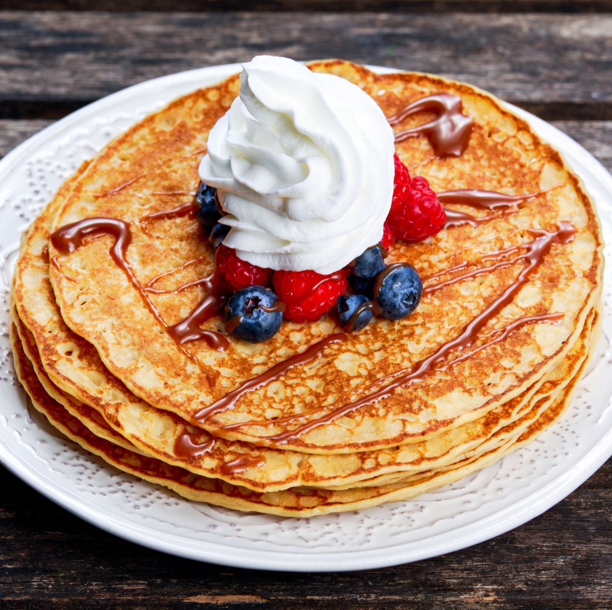

Pancakes

The most delicous pancakes! Thin fluffy and light
Before we start make sure you have milk, eggs and flour at home
I suggest eating pancakes with nutella but you can choose whatever topping you want 😀
Ingredients:
- 2 Eggs
- 200ml milk
- 1 tablespoon sugar
- a breeze of salt
- 200g flour
- 1 tablespoon oil
- stir milk, eggs, sugar, oil and salt into a smooth dough
- slowly add the flour while still stiring
- now that the dough is finished heat up the pan and apply a bit of oil on the pan!
- now let the dough bake from both sides evenly until it gets a nice brown tone and enjoy your tasty pancakes!